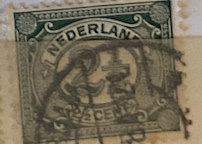
| SOURCE | TITLE| IMAGE MATCH | click to source page |
| eBay | Netherlands 1899-1923 SG#172, 2.5c Deep Green Used #E38148 | eBay | 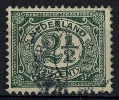 |
| eBay | Netherlands SG: 172 1899 New Daily Stamps 2-1/2c Green Lightly Hinged Stamp | eBay | 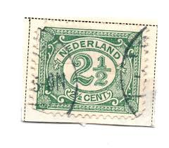 |
| eBay | Green Used Dutch & Colonies Stamps for sale | eBay | 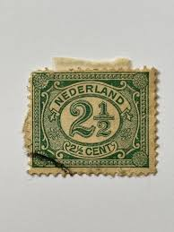 |
| Jace Stamps | Netherlands Stamps | 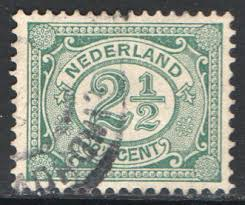 |
| allnumis.com | 2-1/2 Cent 1899, Numerals, Figures - Netherlands - Stamp - 9561 | 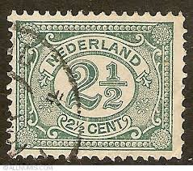 |
| eBay | Holland Used Postage Stamps for sale | eBay | 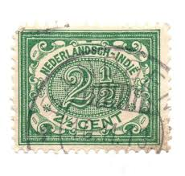 |
| eBay | Nederland 2 Cent Stamp for sale | eBay | 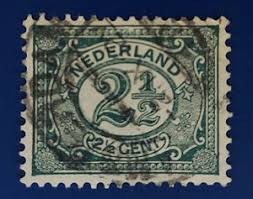 |
| Dreamstime.com | editorial photography. Image of used, currency, cancellation - 375459797 | 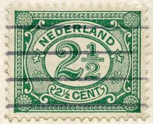 |
| Shutterstock | 4+ Thousand Postage Stamp Number Royalty-Free Images, Stock Photos & Pictures | Shutterstock | 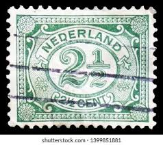 |
| iStock | Stamp Printed By Czechoslovakia Shows Flag Symbols Stock Photo - Download Image Now - iStock | 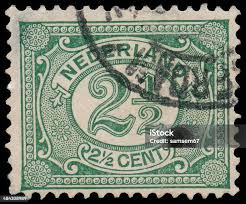 |
| Alamy | NETHERLANDS - CIRCA 1898: a stamp printed in the Netherlands shows Queen Wilhelmina, circa 1898 Stock Photo - Alamy | 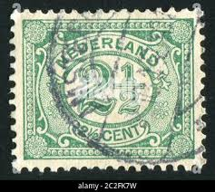 |
| iStock | Netherlands Stamp Numeral 1 Cent Stock Photo - Download Image Now - 1898, Antique, Benelux - iStock | 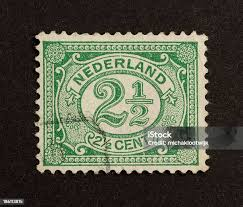 |
| eBay | Netherlands SG: 167 1899 New Daily Stamps 1/2c Violet Used (a15) | eBay | 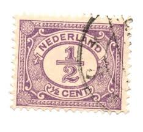 |
| Shutterstock | Netherlands Circa 1899 Stamp Printed Netherlands Stock Photo 90518800 | Shutterstock | 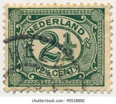 |
| Dreamstime.com | NETHERLANDS - CIRCA 1899: Postal Stamp Printed in the Netherlands, Shows Value of 2 1 2 (two and Half) Dutch Cents Editorial Photo - Image of vintage, 1899: 301563186 | 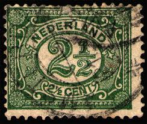 |
| PicClick UK | NETHERLANDS STAMPS - Numeral 2 Dutch cent 1946 Sg:NL 637 £1.16 - PicClick UK |  |
| eBay | Netherlands 2 1/2 cent Stamp - Early Issue (Used) X41 | eBay | 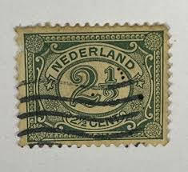 |
| 11 Postage stamps ideas | postage stamps, rare stamps, old stamps | 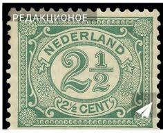 | |
| ebid.net | Wedgwood Of Etruria & Barlaston Sunray Cup on eBid United States | 177523487 | 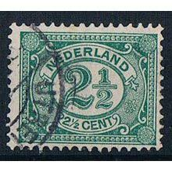 |
| postbeeld.com | Stamp 1908, Netherlands Indies 2.5c BUITEN BEZIT, moved overprint, 1908 - Collecting Stamps - PostBeeld - Online Stamp Shop - Collecting | 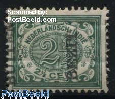 |
| Shutterstock | Netherlands 1922 March 5 Cent Deep Stock Photo 2460108361 | Shutterstock | 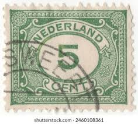 |
| Dreamstime.com | NETHERLANDS - CIRCA 1949: Postage Stamp 10 Dutch Cents Printed in the Netherlands (Holland), Shows Globe with Posthorns Editorial Photo - Image of pattern, ornament: 301563486 | 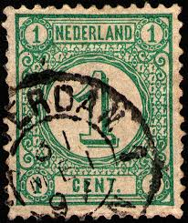 |
| eBay UK | Numeral Cancellation Stamps for sale | eBay UK | 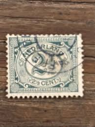 |
| Stamp Auction Network | Rietdijk veilingen B.V. Sale - 424 Page 44 | 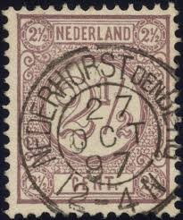 |
| eBay | Netherlands, Scott 60, Numeral of Value, 1898-1924--used | eBay | 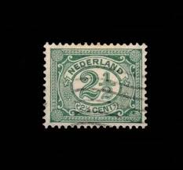 |
| eBay | Foreign Netherlands 3c Stamp Used - #H457 | eBay | 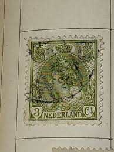 |
| eBay | Keizersgracht, Amsterdam - 1912 | eBay | 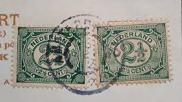 |
| Catawiki | SBZ - West Saxony 1946 - Excellent 'Messe Großblock' issued without guarantee. - Mi.Nr. 5 S - auction online Catawiki | 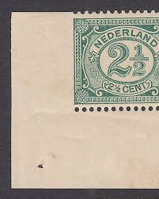 |
| eBay | WWI Stamps for sale | eBay | 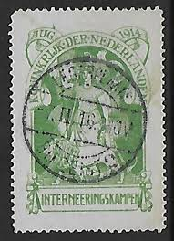 |
| Alamy | Stamp netherlands postage value hi-res stock photography and images - Alamy | 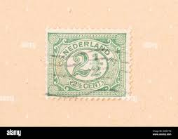 |
| eBay | 1902 Numeral 2-1/2c Stamp | eBay | 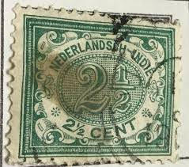 |
| eBay | Netherlands Scott 107, 112 Mint hinged [TK758] | eBay | 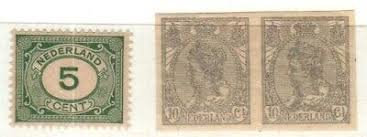 |
| eBay | Lot of 11) 1899-1921 Netherlands Holland 1/2C to 15C Used Hinged Stamps | eBay | 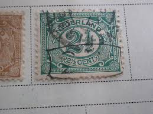 |
| HipStamp | Netherlands; 1894: Sc. # 35c: Used Single Stamp | Europe - Netherlands & Colonies, General Issue Stamp / HipStamp | 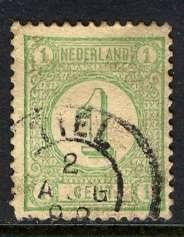 |
| eBay | Netherlands 1896 - Used Scott # 52. Princess Wilhelmina 1g. | eBay | 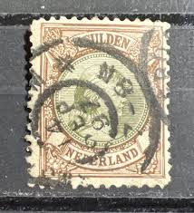 |
| eBay | AMSTERDAM SON CANCEL ON SURCHARGED NETHERLANDS CUT SQUARE | eBay | 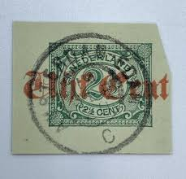 |
| Shutterstock | 1+ Hundred Native East Indies Royalty-Free Images, Stock Photos & Pictures | Shutterstock | 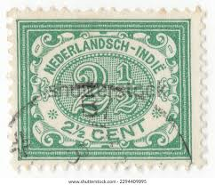 |
| Vintage Postage Stamp with Number Two | 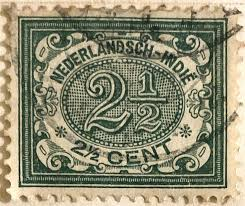 | |
| Catawiki | Netherlands 1899 - Number, variety, left side unperforated. - NVPH 51v - auction online Catawiki | 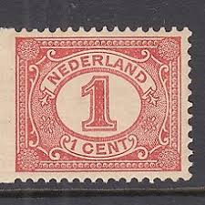 |
| Dreamstime.com | Postage Stamp Printed in Netherlands Shows Figure, Serie, 1 C - Dutch Cent, Circa 1899 Editorial Image - Image of number, digit: 166151070 | 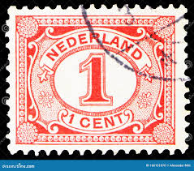 |
| Stamp Auction | Prices Realized | 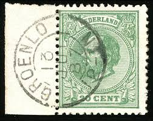 |
| eBay | Netherlands Indies Postal Stationery Cut Out A17P12F145 | eBay | 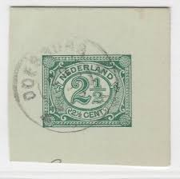 |
| eBay | Foreign Netherlands 2 1/2c Stamp Used - #H466 | eBay | 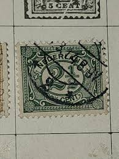 |
| eBay | Definitive 1913 Stamp | eBay | 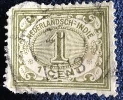 |
| eBay | Netherlands SC# 35 1876 New Daily Stamps 1c Green SG: 121 Perf: 12 1/2 (a22) | eBay | 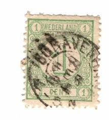 |
| TikTok | 20-Cent Definitieve Postzegel uit de Wilhelmina Tijdperk | TikTok | 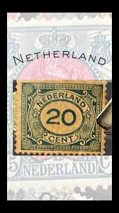 |
| eBay | Netherlands Sc#60-PERFIN`NASM`PAIR(reversed on lower stamp)-ROTTERDAM 28/6 | eBay | 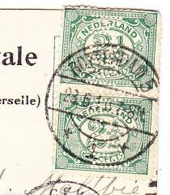 |
| Shutterstock | Netherlands East Indies Circa 1902 Cancelled Stock Photo 2678494597 | Shutterstock | 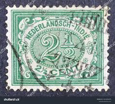 |
| eBay | Netherlands Indies Stamp 1912 Scott 105 A11 Green 2 1/2 Cent | eBay | 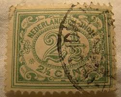 |
| eBay | NETHERLANDS INDIES 84a MINT HINGED OG * INVERTED OVERPRINT - VERY FINE! - JNH | eBay | 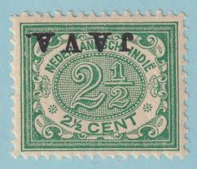 |
| 1918 Jenny invert sold for $460,800 at auction on 30 Oct. | ||
| eBay | Netherlands SC# 35 1876 New Daily Stamps 1c Green SG: 121 Perf: 12 1/2 (a6) | eBay | |
| eBay | Netherlands 2c Stamp - Early Issue (Used Hinged) X21 | eBay | |
| eBay | U9960 NETHERLANDS 1876 Number issue 1c green Number cancel 57 | eBay | |
| eBay | 1904 Netherlands 12 1/2c bluish grey Wilhelmina stamp canc Haarlem | eBay | |
| iStock | Netherlands Stamp Numeral 1 Cent Stock Photo - Download Image Now - 1898, Amsterdam, Antique - iStock | |
| Shutterstock | 3+ Hundred 1906 Cancellation Royalty-Free Images, Stock Photos & Pictures | Shutterstock | |
| eBay | NETHERLANDS PLATE FAULT- # 55 P 1 - WITTE PUNT-** MNH VF | eBay | |
| eBay | Foreign Netherlands 1c Stamp Used - #H464 | eBay | |
| eBay | NETHERLANDS 1896 SC#51a USED 50c EMER & YEL BRN PRINCESS WILHELMINA - CV $200.00 | eBay |